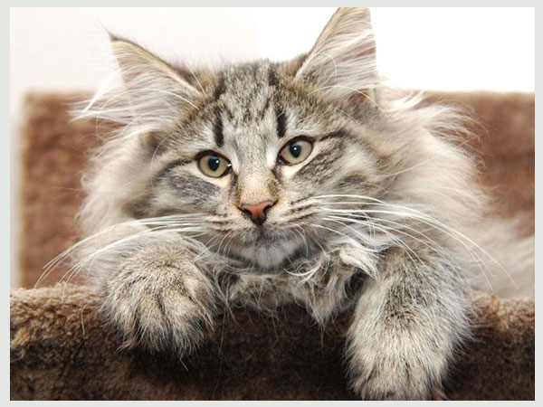
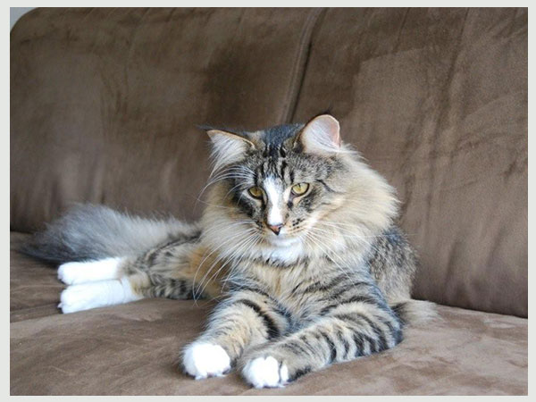
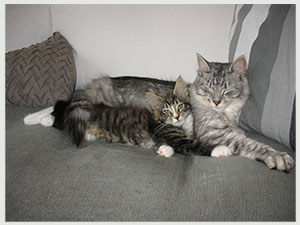
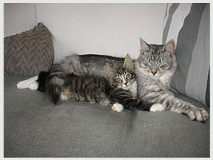
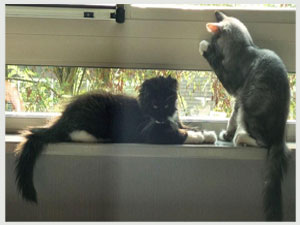
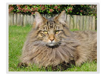
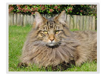
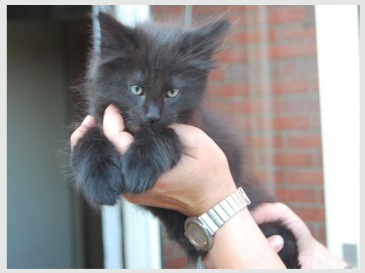
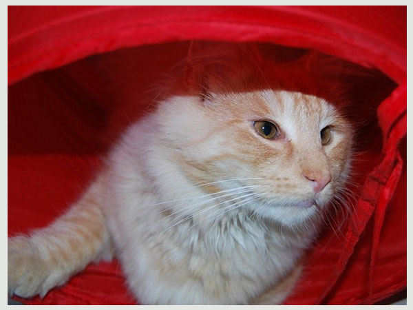
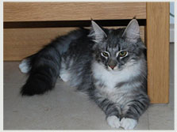

Diesen Sommer haben wir einen Besuch abgestattet 9 Lives Davy Jones. Wir sind so stolz auf ihn ........
Tanya und Adolfo Dank für die fantastische Woche voller Unterhaltung, Überraschungen und deine Freundschaft.
Weena, Torv Hede Reza (Schatz) Ilithya Santaelles*es (Titi) und Davy Jones in liebevolle Hände mit Ihnen, ein wenig verwöhnt, haha.
Der Kuchen war eine Überraschung, aber auch gut zu essen.
Tartistas


NL*Felishof's Arcania

Klaas und Miranda Dank für vertrauen uns Arcania.
Suske en Wiske, und Ludo Catharina müssen die Zucht gehen.

Unsere Ludo hat endlich seinen Platz mit Daniele und ihre Kinder gefunden.
Daniele viel Spaß mit Ludo und das sollte er Freundschaft mit dem Hund.

Ann und Chris,
Es war schön, Sie kennen zu lernen. Für Ihre gesamte Reise von einer im Vereinigten Königreich.
Wir hoffen, dass Catherine bald seinen Platz finden in Sie und in die Zukunft schöne Kätzchen in Zucht Drogo ist zu bringen. Viel Spaß mit ihr und eure anderen Katzen. Bis zum nächsten Jahr in Cornwall.
 

Suzy aka Noa hat seinen Platz durch Anouk gefunden.
Sie lebt dort mit Olly, Syl und Izzy (9levens Aslynn).
Anouk wir froh, dass du es wagen mit einem 9 Leben.
Wir wissen, dass sie Ihren super.
Geben Sie den Männern und Frauen eine dicke Knuf uns und wir in Kontakt bleiben.
 
Spike aka Chicco ging mit Ron und Wilma, wo er und sein Freund Charlie das Haus unsicher zu leben.
Ron und Wilma viel Spaß mit den beiden Jungen.
Joke Dank für Ihr Update und ein Auge auf Smykkeskrin.
9 Levens Derk 11 maanden

Danke Endendijk family für die schönen Bilder und pflege von Derk.
Willkommen zu hause Puck
Danke Martine en Dirk fur dieses schöne Dame

Felishof's Lisa Marie hat in unserer cattery Ankunft
Danke Klaas und Miranda fur dieses schöne und süße Dame

Lisa's erste tag, sehr müde im unsere Tochter arm
30-03-2010 Wurf 12 Dancing princesses ist geboren
An diesem Wochenende , 30/31 januari 2010, the kittens Animal cops Phoenix sind bewegt nach der neue eigentümer
Wir wünschen alle viel vergnügen und glück mit der kittens von 9 levens.
12-01-2010
Wurfe Animal Cops Phoenix update
Foto's Katers Update :
CH Sterrenkatten's Karl, CH Neville Longbottom fra Jerriks Smykkeskrin und
Astor fra Jerikks Smykkeskrin
3-11-2009
Shownieuws update.
Wurf Animal Cops Phoenix ist geboren.
Neue photo 9 levens Raven.
Neue photo 9 levens Jacky Wylde.
22-09-2009
Neu photo von 9 levens Lewis Hamilton, klicken sie hier
Neu photo von Pomoma, klicken sie hier
06-09-2009
Würfe CH Grimnir's Domino und Sterrekatten's Johnny be Good ist geboren
 

9-08-2009
Astor Fra Jerriks Smykkeskrin.

Danke Melanie fur wieder eine fantastisch kater.
6-07-2009
Einige photo von Astor Fra Jerriks Smykkeskrin.
Er komt nach unserer cattery.
 
21-06-2009
Würfe Grimnir's Coya und Rockringen's Jumpin 'Jack Flash ist geboren.


7-06-2009
Wir haben besucht Kimi Raikkönen, würfe F1.
Es war super um er zuruck zu sehen.
Er schielt nog immer.
Danke Jaap und Alida fur gute sorgen über Kimi.
 
14-05-2009
Wir haben besucht würfe Avalon.
Danke Jolanda fur gute sorgen über Emma, 9 levens Morgan la Fey
und danke familie Broxterman fur gute sorgen über Knuth, 9 Levens Uther Pendragon.
 
Beim ein show in Arnhem haben wir 9 Levens Michael Schumacher besucht,alias Ollie, von würfe F1.
Er war EX1 NOM.
Danke familie Slabbekoorn fur gute sorgen über Ollie.